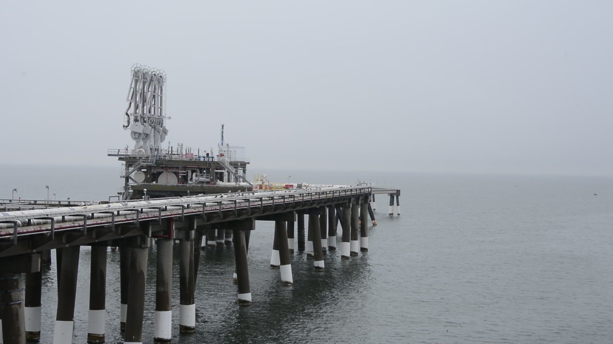

Marylanders Brace for Natural Gas Export Facility
By Lyle Kendrick, Capital News Service

COVE POINT - The natural gas pipes on Dominion’s Cove Point property begin on a pier in the Chesapeake Bay...
Paul Roberts, who owns Deep Creek Cellars, a winery in Garrett County, said his business has been doing well...

In addition to environmental concerns surrounding the plant, some question what will happen to domestic gas prices...